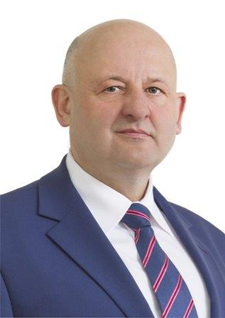

Jan Puchała:

Jan Puchała urodził się 29 stycznia 1961r. na Podłopieniu. Studiował ekonomię na WSBiP w Ostrowcu Świętokrzyskim, oraz na Wyższeh szkole Ekonomii, Turystyki i Nauk Społecznych w Kielcach. Doświadczenie zawodowe: Starosta limanowski 3 kadencji, Prezes zarządu Armada Clinic SA, Obecny członek Rady Powiatu, Dyrektor marketingu w PPHU "Markam", Tymbark SA ........ Do jego najwięszych sukcesów należą: Złoty krzyż zasług z 2013r., Nagroda Samorządowca 20 lecia z 2018r., Człowiek Roku Polskiego Samorządu w 2012r. oraz np. Tytuł "Najlepszy Powiat" w 2011r. Zainteresowany w muzyce,sportach motorowych oraz piłce nożnej.